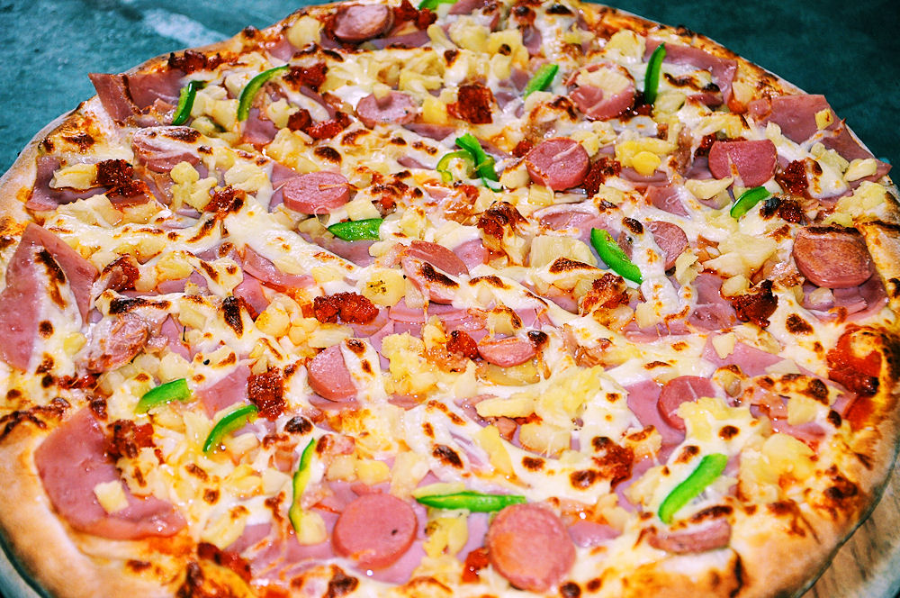
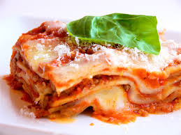
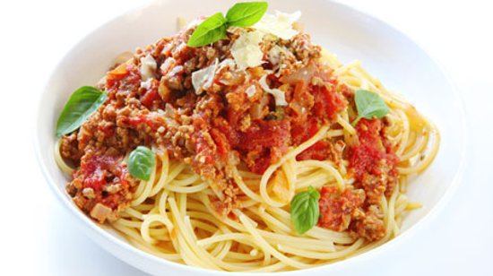

| Imagen | Título | Descripción |
|  | Pizza | La pizza es un pan plano horneado, cuya base habitualmente es elaborada con harina de trigo, sal, agua y levadura. Generalmente es cubierto por salsa de tomate u otros ingredientes locales como salami, champiñones, tiras de cebolla, jamón, aceitunas, etc. |
|  | Pasticho | La lasaña o pasticho es un tipo de pasta que se sirve en láminas, además de denominarse así también a un plato que tiene pasta en láminas intercaladas con carne y bechamel llamado lasaña al horno. |
|  | Pasta | Se denomina pasta a los alimentos preparados con una masa cuyo ingrediente básico es la harina, mezclada con agua, y a la cual se puede añadir sal, huevo u otros ingredientes, conformando un producto que generalmente se cuece en agua hirviendo. |